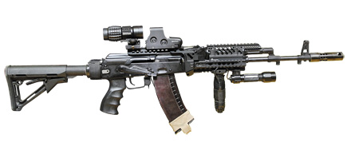
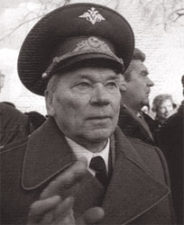
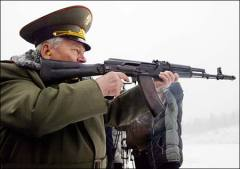

|  |
|
При разработке АК-12 конструкторам удалось значительно улучшить параметры автомата (эргономику, кучность стрельбы, надежность работы и служебный ресурс), адаптировав его к современным условиям ведения боя, при этом сохранив уникальные для автоматов Калашникова характеристики (простоту конструкции, высочайшую надежность, эксплуатационную прочность, относительно низкую себестоимость производства и его модификаций). У нового автомата существенно доработана эргономика. Основные органы управления оружием (предохранитель, переключатель вида огня, защелка магазина, останов затвора) стали доступны одной руке, удерживающей автомат. В конструкцию АК-12 интегрированы планки типа Picatinny rail для установки дополнительного оборудования для более эффективного использования оружия. |
|  |
|
В 1950-1970 гг. на базе АК на вооружение Советской Армии был принят целый ряд унифицированных образцов стрелкового автоматического оружия, разработанный М.Т.Калашниковым: АКМ, АКМС, АК74, АКС74, АК74У, РПК, РПКС, РПК74, РПКС74, ПК, ПКС, ПКМ, ПКСМ, ПКТ, ПКМТ, ПКБ, ПКМБ. |
|  |
|
В 1944 разработал опытный образец самозарядного карабина, а на его основе в 1946 - автомат. В 1947 усовершенствовал его конструкцию и в том же году автомат Калашникова победил в конкурсных испытаниях. В 1949 АК был принят на вооружение, а старший сержант Калашников получил Сталинскую премию первой степени и орден Красной Звезды. С тех пор М.Калашников живет и работает в Ижевске, став Главным конструктором стрелкового оружия и генерал-майором. |